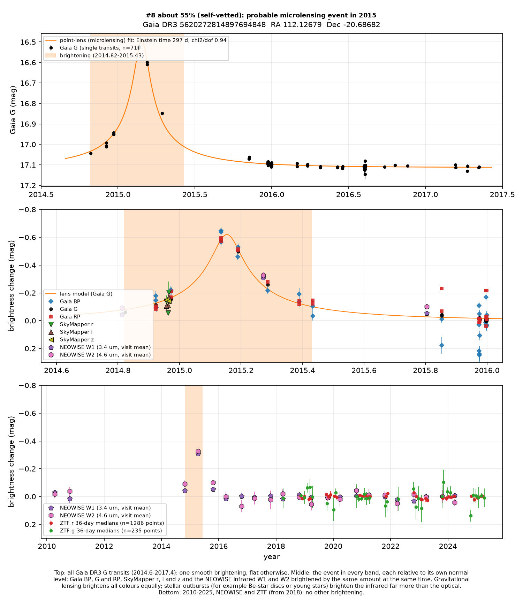
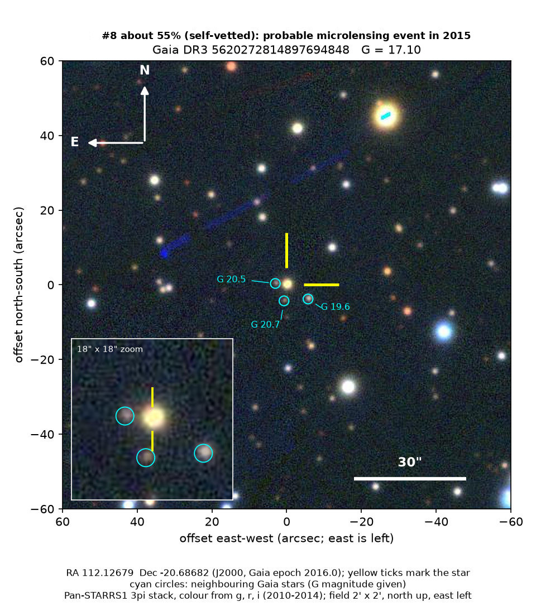

Professor of Mathematics
Paata Ivanisvili
Department of Mathematics, University of California, Irvine

Candidate 8: a star that brightened by 70% for a few months
Why this probability. SkyMapper and NEOWISE independently saw a brightening that was the same from visible light out to 4.6 microns, as lensing predicts. OGLE’s disk survey covered this field without listing an event, and the lens parameters are not pinned down.
How to read the pictures. The finder chart is a patch of sky two arcminutes across, about a fifteenth of the Moon’s width, with north up and east to the left. The star sits between the two yellow ticks, and the white bar is 30 arcseconds. On a light curve the vertical axis is magnitude. A larger magnitude means a fainter star, so the axis runs downwards: down means fainter. Orange shading marks the change. Surveys use slightly different filters, so each one is compared with its own normal level.
Dates such as 2016.22 are a year plus a fraction of a year. 2016.00 is the start of 2016, and 2016.50 is about halfway through the year.

What changed. A distant star in Puppis, 1.5 degrees below the Milky Way’s mid-plane and roughly opposite the Galactic centre. The parallax is 0.14 ± 0.06 milliarcseconds, so the star is several thousand parsecs away, behind a lot of dust. Gaia’s colour fit calls it a hot star, about 8,100 K. Gaia measured it 71 times between 2014 and 2017. It was steady except at the start. It rose from late 2014, peaked around 2015.15 at 0.6 magnitudes brighter (1.7 times the light), was nearly back to normal by mid-2015, and fully back by late 2015.
Two other telescopes caught the same event. SkyMapper, in Australia, saw it on three nights around 2014.97: 0.06 to 0.20 magnitudes brighter, typically 0.14, in its r, i and z filters, when Gaia had it 0.16 magnitudes brighter. NEOWISE, an infrared satellite, saw it at 2015.27: 0.31 magnitudes brighter at 3.4 microns and 0.33 magnitudes brighter at 4.6 microns, when Gaia had it about 0.30 magnitudes brighter. WISE and NEOWISE watched the star in 2010 and twice a year from 2014 to 2024, and ZTF from 2018 to 2025. Neither saw anything else.
Why it might matter. A foreground star passing almost exactly in front of a distant star focuses its light, so the distant star brightens and fades once, smoothly, and by the same factor at every wavelength. Here the brightening was the same in Gaia’s blue, green and red bands and in the infrared out to 4.6 microns. The standard lens model fits the Gaia light curve better than a plain bump, and it happened only once in 15 years. Gaia’s automatic classifier labelled it microlensing.
It may be new. It is not in Gaia’s published list of 363 microlensing events. It has no Gaia alert, and no entry in SIMBAD, VSX (the variable-star index) or the Transient Name Server. The search found nothing on arXiv. It is not in the bulge event lists of OGLE or KMTNet, nor in OGLE’s published list of microlensing events in the Galactic disk (Mroz et al. 2020). Events toward this side of the Galaxy are rare, which is what would make a note worthwhile. A microlensing event is an expected kind of event, not an exotic one.
- Star
- Gaia DR3 5620272814897694848. Gaia’s colour fit calls it a hot star, about 8,100 K
- Location
- RA 112.12679°, Dec −20.68682° (J2000), in Puppis
- Distance
- parallax 0.14 ± 0.06 milliarcseconds, so several thousand parsecs, behind a lot of dust
- Brightness
- Gaia G = 17.1
- Rating
- The line under the title is the search’s own estimate of the chance this is a real, previously unrecorded case of the kind claimed: self-vetted, not reviewed by an outside expert, and nothing has been reported or submitted. See the note on the index.
- Caveat
- The star lies inside an OGLE Galactic-disk field, GD1639, imaged 171 times from 2013 to 2019, yet OGLE did not list an event here. Their cuts may have dropped it, or OGLE’s own data disagree. The search cannot see OGLE’s measurements of this star. The lens model is poorly pinned down: it prefers a long timescale, about 300 days, with the lensed star providing only a small part of the light, a combination that is notoriously uncertain. Gaia’s colour points scatter more than their stated errors. Hot stars with gas discs, called Be stars, also brighten for months, but those outbursts brighten the infrared much more than visible light, which is not what NEOWISE saw. Three faint stars, Gaia G from 19.6 to 20.7, lie 3 to 7 arcseconds away. They are too faint to cause a 70 percent brightening.
